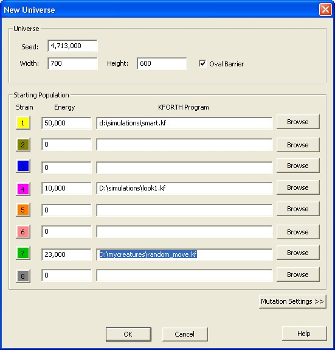
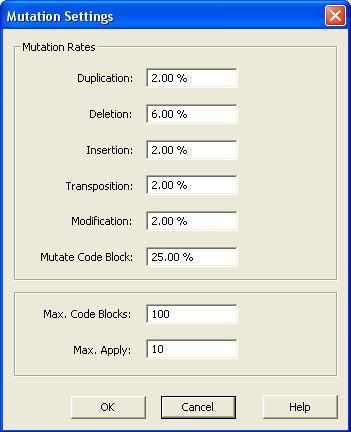
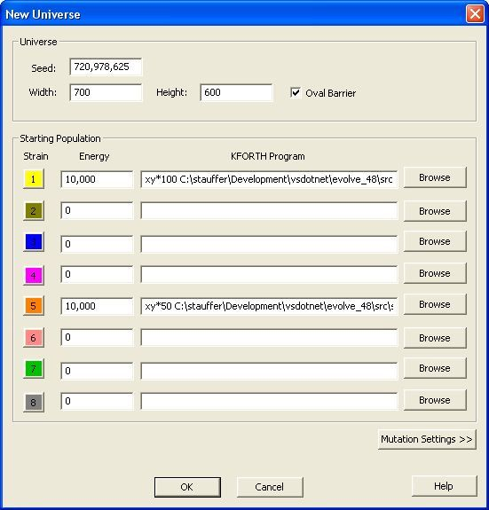
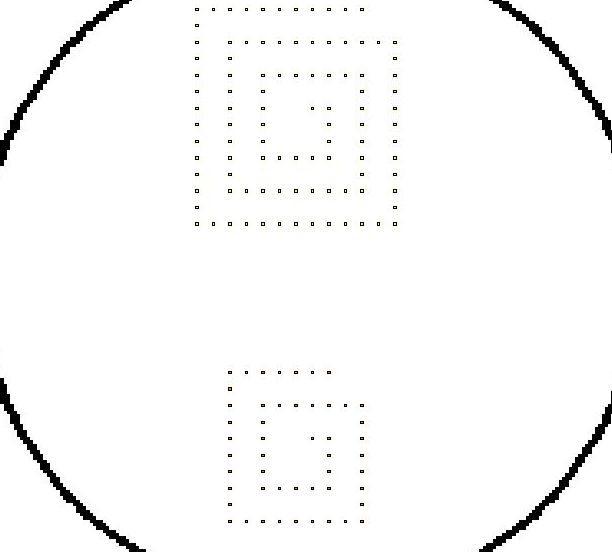

VOLVE 4.0
VOLVE 4.0
New Universe Dialog
This dialog is for creating a new universe/simulation.

Pick any old random value for the seed. By default the a new seed is selected by calling GetTickCount() from the operating system. But you can enter a value here. The seed can be used to reproduce a simulation (of course the other settings must also be the same).
You can select any width and height you wish (up to a maximum of 3000 units). You can leave the defaults 500 x 500 or, as shown here, use 700 x 500. The Oval Barrier option will create a pleasant enclosure for your universe (instead of a bare rectangle). This enclosure may be erased later and you can draw new barriers when the simulation window appears.
Starting Population
Here you specify the starting population. This consists of up to 8 "strains". Each strain is a starting organism which will not interbreed with the other strains. Its color and strain value will follow the creature, and its offspring for the lifetime of the simulation.Unless you know how to write KFORTH programs, it will be best to select 'seed.kf' which is the starting program I use for all my simulations. This is text file which you can look at using the "KFORTH Interpreter".
Energy is an important value for controlling the population of your universe. The default (1,000,000) is kind of high, man. Values between 100,000 to 300,000 will give you a population of about 1,000 - 5,000 organisms. Here we have entered 150,000.
A strain is omitted by keepignsetting the KFORTH Program field blank and setting Energy to 0 (or blank).
Oh, please note that commas are allowed inside of these edit controls. (Cool eh?)
Mutation Settings
Clicking on this button will bring up the Mutation Settings Dialog. This will allow you to configure the mutation probabilities. The defaults should be sufficient. This is the dialog that will appear:
Starting Locations
If your simulation consists of only 1 strain, then that organism will be placed in the center of the simulation grid. If 2 or more starting organisms are selected, they will be placed uniformly around the simulation grid.
This diagram shows 8 locations. This shows the placement when more than one strain has been specified. The first strain you specify will be placed in square 1. The second strain you specify will be placed in square 2. And so on... These numbers ARE not strain numbers. The placement is based on how many strains have been specified. The order is the to to bottom order in the dialog.
Competition Modes
Strains allow Evolve to be used for games. Three variants can be played are:- Arena Bot Battle: Each strain is one of the competing bots (robots).
One of the rules is that no bot can have MAKE-SPORE in its genetic code. This means bots
will not be able to reproduce. The goal is to see which bot can kill the other bots.
You run this kind of simulation until only one competitor remains.
- Army Hoard Bot Battle: Similar to regular bot battles, but the robots can multiply
using the MAKE-SPORE instruction. Mutations are set to "0%", however. This means no evolution takes place.
This allows you to design a genetic program which includes group behaviors and swarming tactics.
- Survival of the fittest: In this game mode, you run a simulation to see if your strain can outcompete other strains. You permit MAKE-SPORE, and mutations are enabled.
Starting Populations
To create a strain with more than one organism, you can preceed the KFORTH program with a strings like: xx*20 or xy*50.Using the string "xy" will cause all the organisms in that strain to be sex only creatures. They will only be able to reproduce sexually.

In this example, strain 1 will consist of 100 organisms (the energy amount is divided evenly amoungst them). And strain 5 will consist of 50 organisms. This population of organisms will be grouped around the starting location described above. They will spiral out from this location. See the following screen shot:

See the section on XY Simulations for more information.
Here are some example strings that can be specified:
| STRING | DESCRIPTION |
| xx*1 |
Create a normal asexual and sexual organism (population 1). This
is the normal behavior when no special string is present.
|
| xy*1 |
Create one organism that can only reproduce sexually. This
probably won't work, as it won't have any other organisms
around in which to fertilize their spores.
|
| xx*100 |
Create 100 normal organisms. (NOTE: 100 is the max).
|
| xy*100 |
Create 100 sex-only organisms. (by the way 100 is the maximum number
of organisms that can be specified).
|
| xy*20 |
Create 20 sex-only organisms.
|
| xx*7 |
Create 7 normal organisms in spiral pattern around starting location.
If total energy divided by 7 isn't a round number, the first creature
gets the remainder.
|